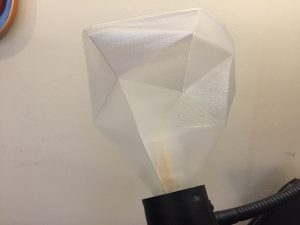
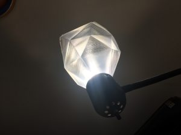

Faceted Lampshade from Clear PLA
I've had a clear, "low poly" angular sculpture in clear PLA sitting on my self for awhile now. Earlier this week, I turned it into a lamp shade.
I built the original model in Blender along the lines of this video from Maker's Muse. The gist of the process is:
- Start with a basic solid, like a sphere or a cube.
- Decimate the solid (reduce the number of triangles that make up the shape) to a very very low level, perhaps down to 20 or 30 polygons.
- Stretch and place the vertices of this blocky solid until satisfied.
In this case, I had ideas about turning this shape into a lighting table topper, with an Arduino and LEDs underneath the open base. But other projects popped up, and this open-base blocky pyramid has sat dormant for several months. This week, I finally found a use.
In my living room, I have a tall two-socket light fixture standing in the corner. One socket stands at the top of the lamp, with a broad frosted dish shade, and there's a small flexible arm coming off the side of the lamp which lost its shade long ago. My partner and I both enjoy using this flexible arm as a re-positionable reading lamp, but that lack of a shade means it's been pretty glare-y.
By trimming the top off of the clear pyramid, I converted the Agrocrag into a lampshade.

The shade is trapped in place by the bulb itself. Of course, an LED bulb is a must, since the heat of an incandescent (or even CFL) light bulb will melt or deform the shade.

Just a little project-reuse for the home!